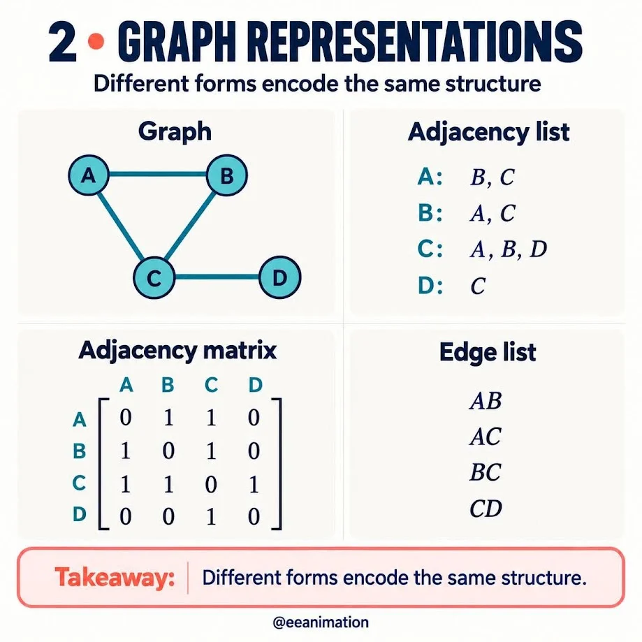

기둥 1 · 점과 선의 기초 · 02장
그래프 표현 — 같은 관계, 네 가지 모양
그림 · 인접 리스트 · 인접 행렬 · 선 목록, 그리고 열지도
그림 · 인접 리스트 · 인접 행렬 · 선 목록, 그리고 열지도
핵심 질문 — 같은 관계를 표로 적는 방법이 여러 개라면, 언제 어느 것을 써야 할까?
1장에서 그래프를 그림으로 그렸어요. 컴퓨터는 그림을 못 읽으니 표로 바꿔 줘야 해요. 오늘은 같은 그래프를 인접 리스트, 인접 행렬, 선 목록으로 적어 보고, 데이터 크기에 따라 무엇이 유리한지 막대그래프로 비교해요.
숫자 요약은 이 장의 예시 계산에서 나온 값입니다(실제 데이터가 아닌 설명용 값).
오늘은 데이터 시각화 조별발표 대결이에요. 같은 데이터, 다른 그림. 누가 더 잘 보여 주는지 봅시다.
1조는 행렬 열지도를 준비했어요. 표 정리는 제 담당이에요.
2조는 막대그래프. 그림은 제가 그렸어요.
코드·수식을 몰라도 됩니다. 그림을 눌러 움직여 보고, 밑줄 친 말을 누르면 뜻이 나옵니다.
이 페이지 사용법: 밑줄 친 말을 누르면 뜻이 나옵니다(Esc로 닫기). 단계마다 그림을 직접 움직여 보고, 끝의 확인 퀴즈로 점검하세요. 앞 장: 01 그래프 기초 — 점과 선으로 관계 적기
1조는 「인접 행렬 열지도」로, 2조는 「선 목록과 저장 공간 막대그래프」로 같은 데이터를 시각화해 발표해요. 서로 질문을 주고받은 뒤 심판 박사가 「무엇을 보여 주려면 어떤 그림이 좋은가」로 평가합니다.
표의 모양이 달라도 담긴 정보는 같아야 합니다. 하나라도 다르면 어딘가 잘못 옮긴 거예요.
그럼 왜 여러 모양을 써요? 하나만 쓰면 되잖아요.
쓰는 목적이 달라서야. 「A와 B가 친구인가?」를 빨리 답하는 표가 있고, 「A의 친구 전부」를 빨리 답하는 표가 있어.
그래프를 계산하려면 표(데이터)로 바꿔야 해요. 표의 모양이 곧 저장 방식이에요.
「둘이 이어졌나?」는 행렬, 「이웃 전부」는 리스트, 「파일로 주고받기」는 선 목록이 편해요.
행렬 열지도, 막대그래프, 관계도 모두 이 표에서 그려요. 9장의 스펙트럼도 인접 행렬로 계산해요.
표 모양이 네 가지나 나와서 헷갈릴 수 있어요. 「한 줄 = 선 하나」인 선 목록 하나만 확실히 알아도 나머지는 거기서 바꿔 만들 수 있어요.
데이터는 하나도 안 바꿨어요. 줄 순서만 바꿨는데 두 무리가 보여요.
2조 질문! 처음부터 무리를 모르면 어떤 순서로 세워요?
그건… 9장에서 컴퓨터가 무리를 찾는 방법이 나온대요. 오늘은 순서가 중요하다는 것까지!
1조 조장으로서 덧붙이면, 행렬은 「A와 B가 친구인가?」를 한 번에 찾아요. 줄 A, 열 B만 보면 되거든요.
사람 1000명, 친구 10명이면 행렬 자리 100만 개 중 1인 자리는 1만 개, 약 1%예요. 나머지 99%는 0을 저장하는 데 써요.
리스트는 1만 개만 적으면 돼요. 백 배 차이!
1조 질문이요. 그럼 행렬은 쓸모없어요?
아니. 점이 적고 거의 다 이어진 그래프, 또 9장의 고윳값 계산에는 행렬이 필요해. 쓸 곳이 달라.
상황 질문 — 반 친구 관계를 정리하라는 숙제를 받았어요. 사람마다 친구 이름을 적을까요, 모든 짝을 표로 펼칠까요?
행렬에서 A줄 B열이 1이면 B줄 A열도 꼭 1이에요?
학교 수학으로 보면: 중학교 「좌표평면」에서 (x, y)와 (y, x)가 대각선 y = x를 기준으로 마주 보는 것과 같아요.
| 식 조각 | 읽는 법 | 뜻 |
|---|---|---|
| A[i][j] | 에이 아이 제이 | i번째 줄 j번째 열의 값 (이어지면 1) |
| A[i][j] = A[j][i] | 대칭 | 방향 없는 그래프에서는 늘 성립 |
| 줄 i의 합 | — | 점 i의 차수 |
원자료 그래프: A–B, A–C, B–C, C–D
A줄: [0, 1, 1, 0] → 합 2 = deg(A)
C줄: [1, 1, 0, 1] → 합 3 = deg(C) · 1의 개수 전체 8 = 2 × 선 4개
친구 관계는 「서로」니까 대각선을 접으면 딱 겹치는 거네요. 팔로우는 안 겹칠 수 있고요!
인접 리스트는 「이름: 친구 목록」 묶음이에요. 파이썬에서는 이런 묶음을 딕셔너리라고 불러요.
인접 행렬은 숫자 줄을 여러 개 쌓은 것, 선 목록은 「(from, to)」 짝을 줄줄이 적은 것이에요.
리스트: A → [B, C], B → [A, C], C → [A, B, D], D → [C]
행렬: 첫 줄 [0, 1, 1, 0] … 넷째 줄 [0, 0, 1, 0]
선 목록: (A, B), (A, C), (B, C), (C, D)
이름이 낯설어도 괜찮아요. 「묶음(딕셔너리) · 숫자 표(행렬) · 짝 목록」 세 가지로만 기억하세요.
반 친구 관계를 「지민: 서준, 하은」처럼 사람별 메모로 적을 수도, 이름을 가로세로로 놓고 친구인 짝에 ○를 치는 출석부로 적을 수도 있어요. 둘 다 같은 반이에요.
인접 리스트는 점마다 이웃 목록, 인접 행렬 A는 n × n 표로 A[i][j] = 1이면 i와 j가 이어졌다는 뜻이에요. 방향 없는 그래프의 행렬은 대각선을 기준으로 대칭이고, 줄 i의 합은 deg(i)예요. 선 목록은 CSV 파일로 주고받기 가장 편한 모양이에요.
행렬의 0을 하나 눌러 1로 바꿔 보세요. 그림과 리스트, 선 목록에서 무엇이 바뀌나요?
방향 없음일 때는 한 번 누르면 자리 두 곳이 같이 바뀌네요. 고장인가요?
고장 아니야. 「팔로우」로 바꾸고 다시 눌러 봐. 그때는 한 곳만 바뀌어.
원자료 「2 · Graph Representations」 — 같은 그래프의 그림, 인접 리스트, 인접 행렬, 선 목록.

위 실험을 컴퓨터로 할 때 쓰는 코드 몇 줄이에요. 한 줄마다 뜻을 붙였어요. 읽지 않아도 본문을 따라오는 데 문제없어요.
직접 해 보려면 — 설치 없이 브라우저에서 파이썬을 돌리는 구글 Colab(colab.research.google.com)에서 새 노트를 열고, 맨 위에 import networkx as nx를 먼저 적은 뒤 아래 줄을 차례로 실행하세요. 결과가 페이지의 숫자와 같은지 비교하는 것이 가장 좋은 연습이에요.
adj = {'A': ['B','C'], 'B': ['A','C'], 'C': ['A','B','D'], 'D': ['C']}nx.to_numpy_array(G)list(G.edges())nx.read_edgelist('friends.csv', delimiter=',')상황 질문 — 반 친구 출석부는 한 장이면 되지만, 전교생 1000명의 「누가 누구와 친구인가」 출석부를 만들면 몇 자리가 필요할까요?
n²이랑 2|E|는 어떻게 비교해요? 숫자가 너무 커서 감이 안 와요.
학교 수학으로 보면: 중학교 「거듭제곱」이에요. 10² = 100, 1000² = 1,000,000처럼 제곱은 아주 빨리 커져요.
| 식 조각 | 읽는 법 | 뜻 |
|---|---|---|
| n² | 엔 제곱 | 행렬의 자리 수 (n × n) |
| 2|E| | 이 곱하기 선 수 | 인접 리스트의 이름 자리 수 |
| k/(n−1) | 밀도 | 행렬에서 1의 비율 (k = 평균 친구 수) |
n = 1000명, 평균 친구 k = 10명 → 선 수 = 1000 × 10 ÷ 2 = 5,000
행렬: 1000 × 1000 = 1,000,000자리 · 리스트: 2 × 5,000 = 10,000자리
1의 비율 = 10 ÷ 999 ≈ 1.0% → 행렬의 99%는 0
사람 수를 10배로 늘리면 행렬은 100배, 리스트는 10배! 그래서 큰 데이터는 리스트로 저장하는군요.
전교생 출석부를 「모든 짝」으로 만들면 대부분이 빈 자리예요. 친구 있는 사람만 적는 메모장은 실제 친구 수만큼만 쓰면 돼요.
인접 행렬은 n²자리, 인접 리스트는 2|E|자리를 써요. 대부분의 실제 네트워크는 1의 비율(밀도)이 아주 낮은 「성긴 그래프」라서 리스트가 유리해요. 반대로 거의 모든 점이 이어진 「빽빽한 그래프」나 행렬 계산(9장)에는 행렬이 편해요.
사람 수를 10명에서 100만 명까지 올려 보세요. 막대가 어떻게 벌어지나요?
100만 명이면 행렬은 1조 자리! 그래도 컴퓨터는 빠르니까 괜찮아요!
1조 자리면 숫자 하나에 1바이트만 써도 1테라바이트야. 친구 수 슬라이더를 50까지 올려도 리스트는 얼마인지 봐.
원자료 하단 Takeaway — 「Different forms encode the same structure.」
위 실험을 컴퓨터로 할 때 쓰는 코드 몇 줄이에요. 한 줄마다 뜻을 붙였어요. 읽지 않아도 본문을 따라오는 데 문제없어요.
직접 해 보려면 — 설치 없이 브라우저에서 파이썬을 돌리는 구글 Colab(colab.research.google.com)에서 새 노트를 열고, 맨 위에 import networkx as nx를 먼저 적은 뒤 아래 줄을 차례로 실행하세요. 결과가 페이지의 숫자와 같은지 비교하는 것이 가장 좋은 연습이에요.
import scipy.sparse as spnx.to_scipy_sparse_array(G)nx.density(G)2조 X2가 AI에게 「사람 100명의 친구 관계를 인접 행렬로 만들면 1의 개수가 몇 개예요? 친구 관계는 300쌍이에요」라고 물었어요.
AI가 표의 개수를 말하면 「방향이 있는 관계인가」부터 확인하세요. 같은 300쌍이라도 저장 모양에 따라 숫자가 두 배 달라져요.
전교생 1000명의 친구 관계를 행렬로 만들 때 필요한 자리 수를 두고 두 조장이 맞붙었어요.
「1000명 × 친구 10명 = 10,000자리면 돼.」
「1000 × 1000 = 1,000,000자리예요!」
누가 맞을지 먼저 예상해 보고 단추를 누르세요. 심판 박사는 계산 결과로만 판정합니다.
개념정리 흐름: 인접 리스트·인접 행렬·선 목록 → 성긴 그래프와 저장 비용
| 개념 | 한 줄 뜻 | 일상 비유 | 비유의 한계 |
|---|---|---|---|
| 인접 리스트 | 점마다 이웃 목록 | 사람별 친구 메모 | 「A와 B가 친구인가?」는 목록을 훑어야 해요 |
| 인접 행렬 | n × n의 0/1 표, 줄 합 = 차수 | 출석부 | 사람이 많으면 거의 0으로 찬 거대한 표 |
| 선 목록 | 한 줄 = 선 하나 (CSV) | 두 열짜리 엑셀 표 | 이웃을 찾으려면 표 전체를 훑어야 해요 |
오늘 조별발표는 무승부, 조장 대결은 1조 승! 같은 데이터라도 질문에 맞는 그림을 고르는 것이 시각화예요.
드디어 제가 이겼어요. 행렬은 제 전문이에요!
다음엔 순서 바꾼 열지도도 그려 볼래요.
다음 장 예고: 03장은 시아의 개인발표예요. 「지하철 환승 길은 걷기일까, 경로일까?」 — 걷기·트레일·경로·사이클을 구분하고 연결 요소를 셉니다.